噬嗑静卦,东方电气-东方电气未来一个月 by 风生水起
时间: 2015-01-06
起卦hour:2015年1月6日17时50分
干支: 甲午年丁丑月壬午日 (
旬空: 申酉 )
噬嗑静卦
白虎 ▅▅▅▅▅ 子孙巳火
腾蛇 ▅▅ ▅▅ 妻财未土 世
勾陈 ▅▅▅▅▅ 官鬼酉金
朱雀 ▅▅ ▅▅ 妻财辰土
青龙 ▅▅ ▅▅ 兄弟寅木 应
玄武 ▅▅▅▅▅ 父母子水
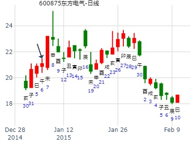
周四，今日上证大盘
以下是引用钱水源在2008-1-10 7:51:00的发言：没填
公历起卦时间：2008年1月10日7时46分 (手工指定)
干支：丁亥年 癸丑月 己酉日 戊辰时 （日空：寅卯）
噬嗑静卦
六神 伏神 本 卦
勾陈 ▅▅▅▅▅ 子孙巳火
朱雀 ▅▅ ▅▅ 妻财未土 世
青龙 ▅▅▅▅▅ 官鬼酉金
玄武 ▅▅ ▅▅ 妻财辰土
白虎 ▅▅ ▅▅ 兄弟寅木 应
腾蛇 ▅▅▅▅▅ 父母子水
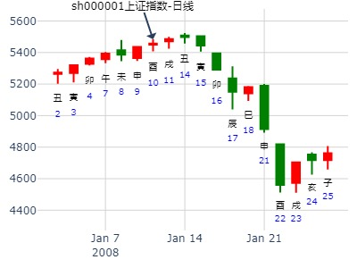
000790华神集团历史最高价位21.80元
公历时间：2007年1月25日9时30分 星期四
干支：丙戌年 辛丑月 己未日 己巳时 (旬空：子丑)
神煞：驿马—巳 桃花—子 日禄—午 贵人—子，申
巽宫：火雷噬嗑
六神 【本 卦】
勾陈 ▅▅▅▅▅ 子孙己巳火
朱雀 ▅▅ ▅▅ 妻财己未土 世
青龙 ▅▅▅▅▅ 官鬼己酉金
玄武 ▅▅ ▅▅ 妻财庚辰土
白虎 ▅▅ ▅▅ 兄弟庚寅木 应
螣蛇 ▅▅▅▅▅ 父母庚子水
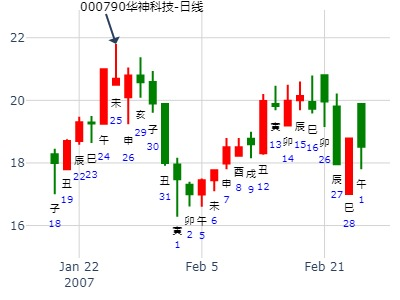
噬嗑静卦,今飞凯达到三月底 金玉堂
时间: 2023-1-30
干支: 壬寅年癸丑月戊子日 (旬空: 午未 )
噬嗑静卦
朱雀 ▅▅▅▅▅ 子孙巳火
青龙 ▅▅ ▅▅ 妻财未土 世
玄武 ▅▅▅▅▅ 官鬼酉金
白虎 ▅▅ ▅▅ 妻财辰土
腾蛇 ▅▅ ▅▅ 兄弟寅木 应
勾陈 ▅▅▅▅▅ 父母子水
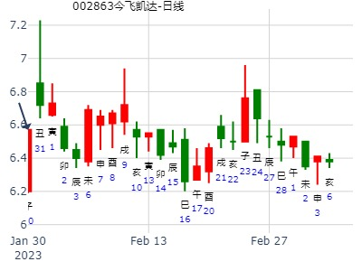
主帖标题: 个股研究交流专贴
麦站看看这个妖股下周那一天进最好
占事：600610中毅达下周涨跌
公历起卦时间：2016年1月31日7时28分 (电脑自动)
干支：乙未年 己丑月 壬子日 甲辰时 （日空：寅卯）
神煞：驿马－寅 桃花－酉 日禄－亥 贵人－卯，巳
巽宫：火雷噬嗑 巽宫：火雷噬嗑
六神 伏神 本 卦 变 卦
白虎 子孙己巳火 ▅▅▅▅▅ 子孙己巳火 ▅▅▅▅▅
腾蛇 妻财己未土 ▅▅ ▅▅ 世 妻财己未土 ▅▅ ▅▅ 世
勾陈 官鬼己酉金 ▅▅▅▅▅ 官鬼己酉金 ▅▅▅▅▅
朱雀 妻财庚辰土 ▅▅ ▅▅ 妻财庚辰土 ▅▅ ▅▅
青龙 兄弟庚寅木 ▅▅ ▅▅ 应 兄弟庚寅木 ▅▅ ▅▅ 应
玄武 父母庚子水 ▅▅▅▅▅ 父母庚子水 ▅▅▅▅▅
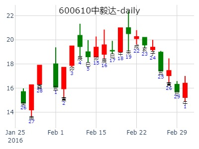
主帖标题: 2017年股市测算[纯周易测算]
根据先贤邵康节《皇极世经》流年卦，测2017年股市
起卦方式：手工指定
公历：2017年02月03日23时49分
四柱：丁酉年 壬寅月 壬戌日 庚子时 (日空：子丑)
卦名：巽宫5世卦：火雷噬嗑
卦身：主卦未爻持世，卦身在二爻；阴爻持世，月卦身在戌
白虎 ▅▅▅▅▅ 子孙己巳火
螣蛇 ▅▅ ▅▅ 妻财己未土 世
勾陈 ▅▅▅▅▅ 官鬼己酉金
朱雀 ▅▅ ▅▅ 妻财庚辰土
青龙 ▅▅ ▅▅ 兄弟庚寅木 应
玄武 ▅▅▅▅▅ 父母庚子水
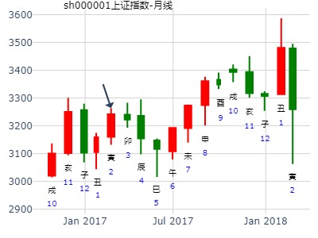
主帖标题: 2月21-25日大盘涨跌卦
占事：2月21-25日大盘涨跌？
公历时间：2011年2月18日15时10分 星期五
农历时间：辛卯年正月十六申时
干支：辛卯年 庚寅月 甲辰日 壬申时 (旬空：寅卯)
神煞：驿马—寅 桃花—酉 日禄—寅 贵人—丑，未
巽宫：火雷噬嗑
六神 【本 卦】
玄武 ▅▅▅▅▅ 子孙己巳火
白虎 ▅▅ ▅▅ 妻财己未土 世
螣蛇 ▅▅▅▅▅ 官鬼己酉金
勾陈 ▅▅ ▅▅ 妻财庚辰土
朱雀 ▅▅ ▅▅ 兄弟庚寅木 应
青龙 ▅▅▅▅▅ 父母庚子水
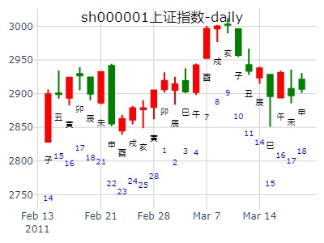
占事：深圳综指2.27-3.3涨跌2000.3黄子孙 逸火生尘
公历起卦时间：2017年2月27日9时4分 (在线摇卦)
干支：丁酉年 壬寅月 乙酉日 辛巳时 （日空：午未）
巽宫：火雷噬嗑
六神 伏神 本 卦
玄武 子孙己巳火 ▅▅▅▅▅
白虎 妻财己未土 ▅▅ ▅▅ 世
腾蛇 官鬼己酉金 ▅▅▅▅▅
勾陈 妻财庚辰土 ▅▅ ▅▅
朱雀 兄弟庚寅木 ▅▅ ▅▅ 应
青龙 父母庚子水 ▅▅▅▅▅

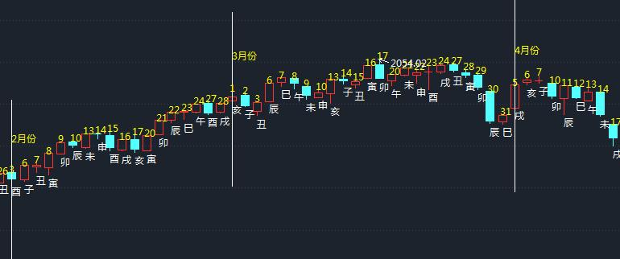
出生：安 年 性别：女 占事：上证指数从明天到下周五的走势
公历起卦时间：2015年3月3日20时4分 (电脑自动)
干支：乙未年 戊寅月 戊寅日 壬戌时 （日空：申酉）
巽宫：火雷噬嗑 巽宫：火雷噬嗑
六神 伏神 本 卦 变 卦
朱雀 子孙己巳火 ▅▅▅▅▅ 子孙己巳火 ▅▅▅▅▅
青龙 妻财己未土 ▅▅ ▅▅ 世 妻财己未土 ▅▅ ▅▅ 世
玄武 官鬼己酉金 ▅▅▅▅▅ 官鬼己酉金 ▅▅▅▅▅
白虎 妻财庚辰土 ▅▅ ▅▅ 妻财庚辰土 ▅▅ ▅▅
腾蛇 兄弟庚寅木 ▅▅ ▅▅ 应 兄弟庚寅木 ▅▅ ▅▅ 应
勾陈 父母庚子水 ▅▅▅▅▅ 父母庚子水 ▅▅▅▅▅
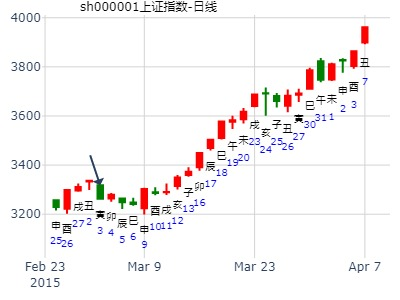
占事: 600058下周走势？起卦方式：手动摇卦 卦主：天天看股
公历时间：2011年3月4日20时20分 农历时间：辛卯年 正月三十日戌时
干支：辛卯年 庚寅月 戊午日 壬戌时
巽宫：火雷噬嗑
六神 【本 卦】
朱雀 ▄▄▄▄▄ 子孙己巳火
青龙 ▄▄ ▄▄ 妻财己未土 世
玄武 ▄▄▄▄▄ 官鬼己酉金
白虎 ▄▄ ▄▄ 妻财庚辰土
螣蛇 ▄▄ ▄▄ 兄弟庚寅木 应
勾陈 ▄▄▄▄▄ 父母庚子水
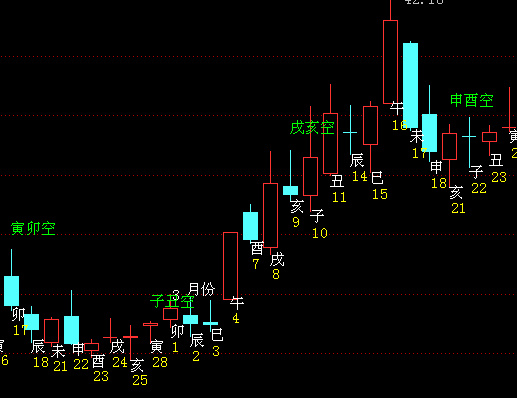
主帖标题: 试测上证3.5收盘走势？
出生：2021 年 性别：男 占事：没填
排卦：元亨利贞网六爻在线排盘系统 https://www.china95.net
公历起卦时间：2021年3月5日8时31分 (电脑自动)
干支：辛丑年 庚寅月 壬子日 甲辰时 （日空：寅卯）
神煞：驿马－寅 桃花－酉 日禄－亥 贵人－卯，巳
巽宫：火雷噬嗑 巽宫：火雷噬嗑
六神 伏神 本 卦 变 卦
白虎 子孙己巳火 ▅▅▅▅▅ 子孙己巳火 ▅▅▅▅▅
螣蛇 妻财己未土 ▅▅ ▅▅ 世 妻财己未土 ▅▅ ▅▅ 世
勾陈 官鬼己酉金 ▅▅▅▅▅ 官鬼己酉金 ▅▅▅▅▅
朱雀 妻财庚辰土 ▅▅ ▅▅ 妻财庚辰土 ▅▅ ▅▅
青龙 兄弟庚寅木 ▅▅ ▅▅ 应 兄弟庚寅木 ▅▅ ▅▅ 应
玄武 父母庚子水 ▅▅▅▅▅ 父母庚子水 ▅▅▅▅▅
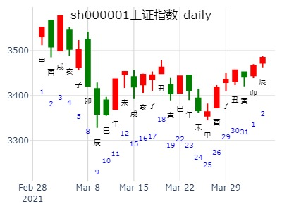
天机六爻排盘
2024年3月9日 10:38
占问：中远海能345月走势，噬嗑静卦。by风生水起
甲辰年 丁卯月 壬申日 乙巳时 (旬空：戌亥)
噬嗑静卦
六神 伏神 本 卦
白虎 ▅▅▅▅▅ 子孙巳火
腾蛇 ▅▅ ▅▅ 妻财未土 世
勾陈 ▅▅▅▅▅ 官鬼酉金
朱雀 ▅▅ ▅▅ 妻财辰土
青龙 ▅▅ ▅▅ 兄弟寅木 应
玄武 ▅▅▅▅▅ 父母子水
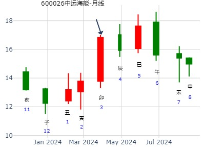
测002647仁东控股在2021.3.22-2021.3.26走势
公历起卦时间：2021年3月20日15时30分 (手工指定)
干支：辛丑年 辛卯月 丁卯日 戊申时 （日空：戌亥）
神煞：驿马－巳 桃花－子 日禄－午 贵人－酉，亥
巽宫：火雷噬嗑 巽宫：火雷噬嗑
六神 伏神 本 卦 变 卦
青龙 子孙己巳火 ▅▅▅▅▅ 子孙己巳火 ▅▅▅▅▅
玄武 妻财己未土 ▅▅ ▅▅ 世 妻财己未土 ▅▅ ▅▅ 世
白虎 官鬼己酉金 ▅▅▅▅▅ 官鬼己酉金 ▅▅▅▅▅
螣蛇 妻财庚辰土 ▅▅ ▅▅ 妻财庚辰土 ▅▅ ▅▅
勾陈 兄弟庚寅木 ▅▅ ▅▅ 应 兄弟庚寅木 ▅▅ ▅▅ 应
朱雀 父母庚子水 ▅▅▅▅▅ 父母庚子水 ▅▅▅▅▅
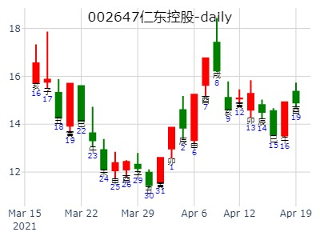
主帖标题: 股市诸葛神数测试
600021输入的三个汉字为：海 电 力,卦语：秋月云开后 熏风雨过时 若逢楚国久知已 等闲一荐不须疑公历时间：2007年3月27日15时52分 星期二农历时间：丁亥年二月初九申时
干支：丁亥年 癸卯月 庚申日 甲申时 (旬空：子丑)
神煞：驿马—寅 桃花—酉 日禄—申 贵人—寅，午
巽宫：火雷噬嗑 六神 【本 卦】 螣蛇 ▅▅▅▅▅ 子孙己巳火
勾陈 ▅▅ ▅▅ 妻财己未土 世
朱雀 ▅▅▅▅▅ 官鬼己酉金
青龙 ▅▅ ▅▅ 妻财庚辰土
玄武 ▅▅ ▅▅ 兄弟庚寅木 应
白虎 ▅▅▅▅▅ 父母庚子水
子孙无力，财星衰弱，不是一个好股票。
[此贴子已经被作者于2007-3-27 15:52:48编辑过]
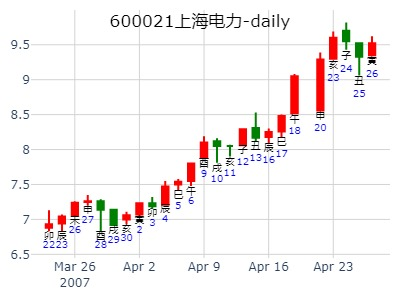
3月29日上证
公历起卦时间：2019年3月28日16时46分 (电脑自动)
干支：己亥年 丁卯月 甲子日 壬申时 （日空：戌亥）
巽宫：火雷噬嗑
六神 伏神 本 卦
玄武 子孙己巳火 ▅▅▅▅▅
白虎 妻财己未土 ▅▅ ▅▅ 世
腾蛇 官鬼己酉金 ▅▅▅▅▅
勾陈 妻财庚辰土 ▅▅ ▅▅
朱雀 兄弟庚寅木 ▅▅ ▅▅ 应
青龙 父母庚子水 ▅▅▅▅▅
噬嗑为吃进,财持世,上涨50点左右
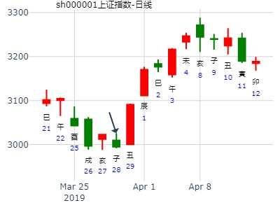
沪深300下午走势4.2
庚子 己卯 乙亥 壬午 (申酉空)
庚子年三月初十
(2020/04/02 11:46:24)
火雷噬嗑
玄武 子孙巳火 ／
白虎 妻财未土 ∥ 巽
腾蛇 官鬼己酉 ／
勾陈 妻财辰土 ∥
朱雀 兄弟寅木 ∥ 应
青龙 父母子水 ／
噬嗑本义咀嚼上下咬合，就是来回震荡
下午未时，世爻财爻临白虎 凶猛
断 为力度略大的上涨
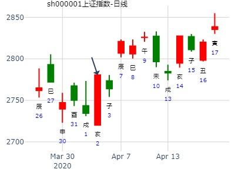
占问事宜：5月16日沪市涨跌？
公历：2016年5月13日18时31分，星期五。
干支：丙申年 癸巳月 乙未日 乙酉时 (卦身：戌)
主 火雷噬嗑(巽宫) [空亡:辰、巳]
玄武 ▅▅▅▅▅ 子孙己巳火
白虎 ▅▅ ▅▅ 妻财己未土 世
螣蛇 ▅▅▅▅▅ 官鬼己酉金
勾陈 ▅▅ ▅▅ 妻财庚辰土
朱雀 ▅▅ ▅▅ 兄弟庚寅木 应
青龙 ▅▅▅▅▅ 父母庚子水
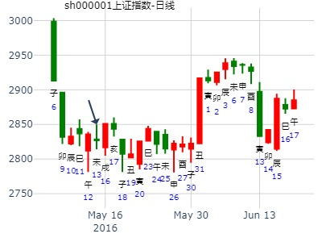
主帖标题: 一个小步慢牛的很稳票
占事：600191巳午月行情
起卦方式：手工指定
公历时间：2011年5月15日20时4分
干 支：辛卯年 癸巳月 庚午日 丙戌时 （戌亥空）
神 煞：驿马─申 桃花─卯 日禄─申 贵人─丑，未
巽宫：火雷噬嗑
六神 【本 卦】
螣蛇 ▄▄▄▄▄ 子孙己巳火
勾陈 ▄▄ ▄▄ 妻财己未土 世
朱雀 ▄▄▄▄▄ 官鬼己酉金
青龙 ▄▄ ▄▄ 妻财庚辰土
玄武 ▄▄ ▄▄ 兄弟庚寅木 应
白虎 ▄▄▄▄▄ 父母庚子水
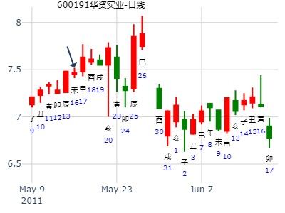
主帖标题: 5.17是涨？跌？幅度如何？（4）
5.17上证指数？
干支：辛丑年 癸巳月 甲子日 辛未时 （日空：戌亥）
神煞：驿马－寅 桃花－酉 日禄－寅 贵人－丑，未
巽宫：火雷噬嗑 巽宫：火雷噬嗑
六神 伏神 本 卦 变 卦
玄武 子孙己巳火 ▅▅▅▅▅ 子孙己巳火 ▅▅▅▅▅
白虎 妻财己未土 ▅▅ ▅▅ 世 妻财己未土 ▅▅ ▅▅ 世
螣蛇 官鬼己酉金 ▅▅▅▅▅ 官鬼己酉金 ▅▅▅▅▅
勾陈 妻财庚辰土 ▅▅ ▅▅ 妻财庚辰土 ▅▅ ▅▅
朱雀 兄弟庚寅木 ▅▅ ▅▅ 应 兄弟庚寅木 ▅▅ ▅▅ 应
青龙 父母庚子水 ▅▅▅▅▅ 父母庚子水 ▅▅▅▅▅
收阴，小阴，二十多点吧
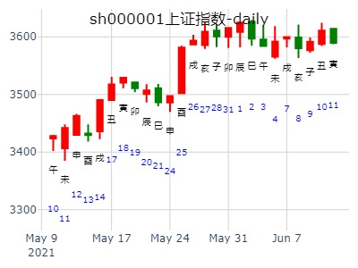
出生：2021 年 性别：男 占事：
测6.2日002600领益智造收盘走势？俱+
排卦：元亨利贞网六爻在线排盘系统 https://www.china95.net
公历起卦时间：2021年6月2日8时25分 (电脑自动)
干支：辛丑年 癸巳月 辛巳日 壬辰时 （日空：申酉）
神煞：驿马－亥 桃花－午 日禄－酉 贵人－寅，午
巽宫：火雷噬嗑 巽宫：火雷噬嗑
六神 伏神 本 卦 变 卦
螣蛇 子孙己巳火 ▅▅▅▅▅ 子孙己巳火 ▅▅▅▅▅
勾陈 妻财己未土 ▅▅ ▅▅ 世 妻财己未土 ▅▅ ▅▅ 世
朱雀 官鬼己酉金 ▅▅▅▅▅ 官鬼己酉金 ▅▅▅▅▅
青龙 妻财庚辰土 ▅▅ ▅▅ 妻财庚辰土 ▅▅ ▅▅
玄武 兄弟庚寅木 ▅▅ ▅▅ 应 兄弟庚寅木 ▅▅ ▅▅ 应
白虎 父母庚子水 ▅▅▅▅▅ 父母庚子水 ▅▅▅▅▅
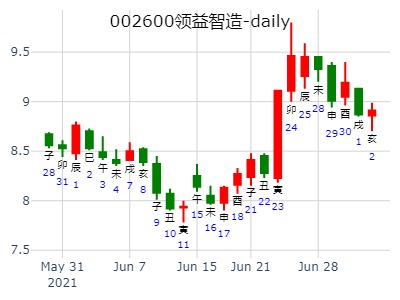
噬嗑静卦
占事: 安居宝下周
时间: 2021-06-12
干支: 辛丑年甲午月辛卯日 (旬空: 午未 )
噬嗑静卦
六神 伏神 本 卦
腾蛇 ▅▅▅▅▅ 子孙巳火
勾陈 ▅▅ ▅▅ 妻财未土 世
朱雀 ▅▅▅▅▅ 官鬼酉金
青龙 ▅▅ ▅▅ 妻财辰土
玄武 ▅▅ ▅▅ 兄弟寅木 应
白虎 ▅▅▅▅▅ 父母子水
源文件名:安居宝下周，火雷噬嗑静卦。风生
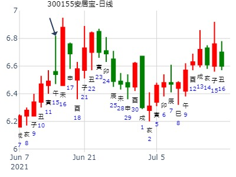
主帖标题: （连续贴）周上证指数走势
占事：本周上证指数走势
起卦方式：手工指定
中国预测网六爻排盘http://pp.yuceweb.com/6y.asp
公历时间：2022年6月13日8时19分 农历时间：壬寅年 五月十五日辰时
干 支：壬寅年 丙午月 丁酉日 甲辰时
旬 空：辰巳 寅卯 辰巳 寅卯
神 煞：驿马─亥 桃花─午 日禄─午 贵人─酉，亥
中国预测网纳甲六爻排盘
巽宫：火雷噬嗑
六神 【本 卦】
青龙 ▄▄▄▄▄ 子孙己巳火
玄武 ▄▄ ▄▄ 妻财己未土 世
白虎 ▄▄▄▄▄ 官鬼己酉金
螣蛇 ▄▄ ▄▄ 妻财庚辰土
勾陈 ▄▄ ▄▄ 兄弟庚寅木 应
朱雀 ▄▄▄▄▄ 父母庚子水
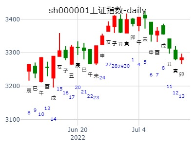
占事: 下半年大盘财运？ wang
时间: 2018-06-28 （12：31）
干支: 戊戌年戊午月辛卯日甲午时 (旬空: 午未 )
噬嗑静卦
六神 伏神 本 卦
腾蛇 ▅▅▅▅▅ 子孙巳火
勾陈 ▅▅ ▅▅ 妻财未土 世
朱雀 ▅▅▅▅▅ 官鬼酉金
青龙 ▅▅ ▅▅ 妻财辰土
玄武 ▅▅ ▅▅ 兄弟寅木 应
白虎 ▅▅▅▅▅ 父母子水
2018年下半年财运。火雷噬嗑静卦。世财旬空。仍是无财。
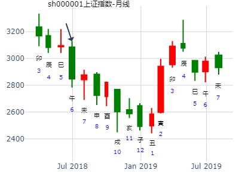
出生：没填 年 性别：男 占事：占未月股市？
排卦：元亨利贞网六爻在线排盘系统
公历起卦时间：2013年7月7日10时54分
干支：癸巳年 己未月 甲戌日 己巳时 （日空：申酉）
神煞：驿马－申 桃花－卯 日禄－寅 贵人－丑，未
巽宫：火雷噬嗑 巽宫：火雷噬嗑
六神 伏神 本 卦 变 卦
玄武 子孙己巳火 ▅▅▅▅▅ 子孙己巳火 ▅▅▅▅▅
白虎 妻财己未土 ▅▅ ▅▅ 世 妻财己未土 ▅▅ ▅▅ 世
腾蛇 官鬼己酉金 ▅▅▅▅▅ 官鬼己酉金 ▅▅▅▅▅
勾陈 妻财庚辰土 ▅▅ ▅▅ 妻财庚辰土 ▅▅ ▅▅
朱雀 兄弟庚寅木 ▅▅ ▅▅ 应 兄弟庚寅木 ▅▅ ▅▅ 应
青龙 父母庚子水 ▅▅▅▅▅ 父母庚子水 ▅▅▅▅▅
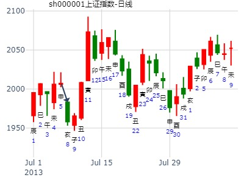
王 占事：上证今天会跌不？
排卦：元亨利贞网六爻在线排盘系统 http://www.china95.net
公历起卦时间：2014年7月10日8时47分 (在线摇卦)
干支：甲午年 辛未月 壬午日 甲辰时 （日空：申酉）
巽宫：火雷噬嗑 巽宫：火雷噬嗑
六神 伏神 本 卦 变 卦
白虎 子孙己巳火 ▅▅▅▅▅ 子孙己巳火 ▅▅▅▅▅
腾蛇 妻财己未土 ▅▅ ▅▅ 世 妻财己未土 ▅▅ ▅▅ 世
勾陈 官鬼己酉金 ▅▅▅▅▅ 官鬼己酉金 ▅▅▅▅▅
朱雀 妻财庚辰土 ▅▅ ▅▅ 妻财庚辰土 ▅▅ ▅▅
青龙 兄弟庚寅木 ▅▅ ▅▅ 应 兄弟庚寅木 ▅▅ ▅▅ 应
玄武 父母庚子水 ▅▅▅▅▅ 父母庚子水 ▅▅▅▅▅
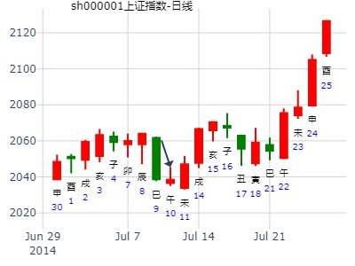
噬嗑静卦
占事: 禾望电气未来走势？公历2021年7月22
时间: 2021-07-22 （14：37）
干支: 辛丑年乙未月辛未日乙未时 (旬空: 戌亥 )
噬嗑静卦
六神 伏神 本 卦
腾蛇 ▅▅▅▅▅ 子孙巳火
勾陈 ▅▅ ▅▅ 妻财未土 世
朱雀 ▅▅▅▅▅ 官鬼酉金
青龙 ▅▅ ▅▅ 妻财辰土
玄武 ▅▅ ▅▅ 兄弟寅木 应
白虎 ▅▅▅▅▅ 父母子水
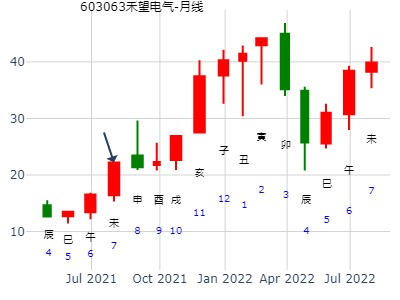
主帖标题: 请易经高手解8月2日大盘涨跌卦?
占事：8月2日大盘涨跌?
公历时间：2007年8月1日15时11分 星期三
干支：丁亥年 丁未月 丁卯日 戊申时 (旬空：戌亥)
神煞：驿马—巳 桃花—子 日禄—午 贵人—酉，亥
巽宫：火雷噬嗑
六神 【本 卦】
青龙 ▅▅▅▅▅ 子孙己巳火
玄武 ▅▅ ▅▅ 妻财己未土 世
白虎 ▅▅▅▅▅ 官鬼己酉金
螣蛇 ▅▅ ▅▅ 妻财庚辰土
勾陈 ▅▅ ▅▅ 兄弟庚寅木 应
朱雀 ▅▅▅▅▅ 父母庚子水
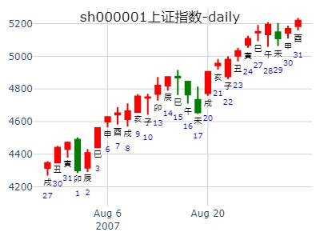
占事：8-9-10三个月大盘如何？ 阿晖
公历起卦时间：2014年8月1日9时25分 (在线摇卦)
干支：甲午年 辛未月 甲辰日 己巳时 （日空：寅卯）
神煞：驿马－寅 桃花－酉 日禄－寅 贵人－丑，未
巽宫：火雷噬嗑
六神 伏神 本 卦
玄武 子孙己巳火 ▅▅▅▅▅
白虎 妻财己未土 ▅▅ ▅▅ 世
腾蛇 官鬼己酉金 ▅▅▅▅▅
勾陈 妻财庚辰土 ▅▅ ▅▅
朱雀 兄弟庚寅木 ▅▅ ▅▅ 应
青龙 父母庚子水 ▅▅▅▅▅
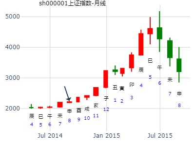
占事: 行情持续到几月？
时间: 2020-08-05
干支: 庚子年癸未月庚辰日 (旬空: 申酉 )
噬嗑静卦
六神 伏神 本 卦
腾蛇 ▅▅▅▅▅ 子孙巳火
勾陈 ▅▅ ▅▅ 妻财未土 世
朱雀 ▅▅▅▅▅ 官鬼酉金
青龙 ▅▅ ▅▅ 妻财辰土
玄武 ▅▅ ▅▅ 兄弟寅木 应
白虎 ▅▅▅▅▅ 父母子水
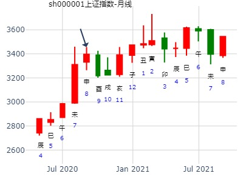


主帖标题: 8月26-30日大盘涨跌卦
占事：8月26-30日大盘涨跌？
公历起卦时间：2013年8月23日16时35分 (手工指定)
干支：癸巳年 庚申月 辛酉日 丙申时 （日空：子丑）
神煞：驿马－亥 桃花－午 日禄－酉 贵人－寅，午
巽宫：火雷噬嗑
六神 伏神 本 卦
腾蛇 子孙己巳火 ▅▅▅▅▅
勾陈 妻财己未土 ▅▅ ▅▅ 世
朱雀 官鬼己酉金 ▅▅▅▅▅
青龙 妻财庚辰土 ▅▅ ▅▅
玄武 兄弟庚寅木 ▅▅ ▅▅ 应
白虎 父母庚子水 ▅▅▅▅▅

主帖标题: 请帮我看看这个东旭光电会怎么样
s出生：没填 年 性别：女
占事：明天会怎么样
排卦：元亨利贞网六爻在线排盘系统
公历起卦时间：2016年9月1日15时52分
干支：丙申年 丙申月 丙戌日 丙申时 （日空：午未）
神煞：驿马－申 桃花－卯 日禄－巳 贵人－酉，亥
巽宫：火雷噬嗑 巽宫：火雷噬嗑
六神 伏神 本 卦 变 卦
青龙 子孙己巳火 ▅▅▅▅▅ 子孙己巳火 ▅▅▅▅▅
玄武 妻财己未土 ▅▅ ▅▅ 世 妻财己未土 ▅▅ ▅▅ 世
白虎 官鬼己酉金 ▅▅▅▅▅ 官鬼己酉金 ▅▅▅▅▅
腾蛇 妻财庚辰土 ▅▅ ▅▅ 妻财庚辰土 ▅▅ ▅▅
勾陈 兄弟庚寅木 ▅▅ ▅▅ 应 兄弟庚寅木 ▅▅ ▅▅ 应
朱雀 父母庚子水 ▅▅▅▅▅ 父母庚子水 ▅▅▅▅▅
今天忍住了没跑 有点儿后悔了 想看看明天走势 谢谢
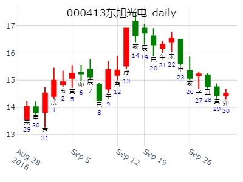
4、收集亥月上证涨跌卦例
公历时间：2020年11月8日7时30分
干 支：庚子年 丁亥月 乙卯日 庚辰时
旬 空：辰巳 午未 子丑 申酉
神 煞：驿马─巳 桃花─子 日禄─卯 贵人─子，申
巽宫：火雷噬嗑
六神 【本 卦】
玄武 ▄▄▄▄▄ 子孙己巳火
白虎 ▄▄ ▄▄ 妻财己未土 世
螣蛇 ▄▄▄▄▄ 官鬼己酉金
勾陈 ▄▄ ▄▄ 妻财庚辰土
朱雀 ▄▄ ▄▄ 兄弟庚寅木 应
青龙 ▄▄▄▄▄ 父母庚子水
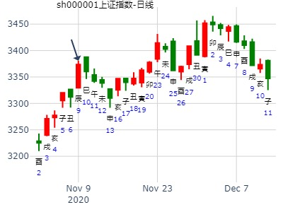
002114罗平锌电18- 23走势
起卦方式：手工指定 999tong
公历时间：2015年11月18日11时20分
干 支：乙未年 丁亥月 戊戌日 戊午时
旬 空：辰巳 午未 (辰巳) 子丑
巽宫：火雷噬嗑
六神 【本 卦】
朱雀 ▄▄▄▄▄ 子孙己巳火
青龙 ▄▄ ▄▄ 妻财己未土 世
玄武 ▄▄▄▄▄ 官鬼己酉金
白虎 ▄▄ ▄▄ 妻财庚辰土
螣蛇 ▄▄ ▄▄ 兄弟庚寅木 应
勾陈 ▄▄▄▄▄ 父母庚子水
午日涨停。
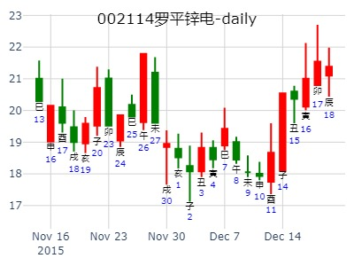
占事：2017年12月大盘涨跌？
公历起卦时间：2017年11月30日16时2分 (手工指定)
干支：丁酉年 辛亥月 辛酉日 丙申时 （日空：子丑）
神煞：驿马－亥 桃花－午 日禄－酉 贵人－寅，午
巽宫：火雷噬嗑
六神 伏神 本 卦
腾蛇 子孙己巳火 ▅▅▅▅▅
勾陈 妻财己未土 ▅▅ ▅▅ 世
朱雀 官鬼己酉金 ▅▅▅▅▅
青龙 妻财庚辰土 ▅▅ ▅▅
玄武 兄弟庚寅木 ▅▅ ▅▅ 应
白虎 父母庚子水 ▅▅▅▅▅
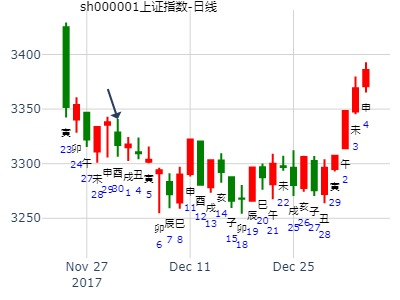
明天周四涨跌
公历时间：2020年12月2日15时18分
干 支：庚子年 丁亥月 己卯日 壬申时
旬 空：辰巳 午未 申酉 戌亥
神 煞：驿马─巳 桃花─子 日禄─午 贵人─子，申
中国预测网纳甲六爻排盘
巽宫：火雷噬嗑
六神 【本 卦】
勾陈 ▄▄▄▄▄ 子孙己巳火
朱雀 ▄▄ ▄▄ 妻财己未土 世
青龙 ▄▄▄▄▄ 官鬼己酉金
玄武 ▄▄ ▄▄ 妻财庚辰土
白虎 ▄▄ ▄▄ 兄弟庚寅木 应
螣蛇 ▄▄▄▄▄ 父母庚子水
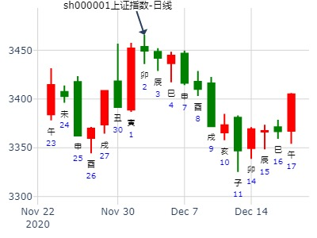
今天周五涨跌
公历时间：2020年12月11日8时26分
干 支：庚子年 戊子月 戊子日 丙辰时
旬 空：辰巳 午未 午未 子丑
神 煞：驿马─寅 桃花─酉 日禄─巳 贵人─丑，未
中国预测网纳甲六爻排盘
巽宫：火雷噬嗑
六神 【本 卦】
朱雀 ▄▄▄▄▄ 子孙己巳火
青龙 ▄▄ ▄▄ 妻财己未土 世
玄武 ▄▄▄▄▄ 官鬼己酉金
白虎 ▄▄ ▄▄ 妻财庚辰土
螣蛇 ▄▄ ▄▄ 兄弟庚寅木 应
勾陈 ▄▄▄▄▄ 父母庚子水
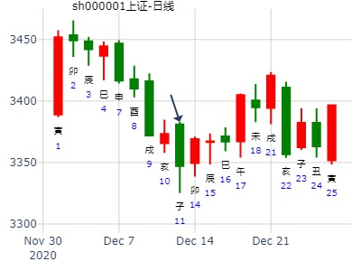
主帖标题: 奇怪
主题：四川美丰在今天的行情走势如何
辛丑 庚子 壬子 甲辰 (寅卯空)
(2021/12/30 08:22:00)
火雷噬嗑
白虎 子孙巳火 ／
腾蛇 妻财未土 ∥ 世
勾陈 官鬼己酉 ／
朱雀 妻财辰土 ∥
青龙 兄弟寅木 ∥ 应
玄武 父母子水 ／
实际:涨停,莫名其妙.
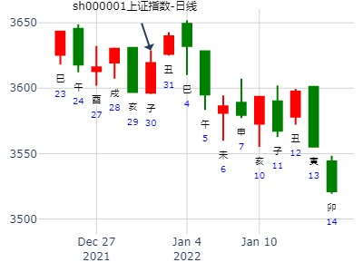
占事：2021年大盘涨跌
公历起卦时间：2020年12月31日16时45分 (手工指定)
干支：庚子年 戊子月 戊申日 庚申时 （日空：寅卯）
神煞：驿马－寅 桃花－酉 日禄－巳 贵人－丑，未
巽宫：火雷噬嗑
六神 伏神 本 卦
朱雀 子孙己巳火 ▅▅▅▅▅
青龙 妻财己未土 ▅▅ ▅▅ 世
玄武 官鬼己酉金 ▅▅▅▅▅
白虎 妻财庚辰土 ▅▅ ▅▅
螣蛇 兄弟庚寅木 ▅▅ ▅▅ 应
勾陈 父母庚子水 ▅▅▅▅▅
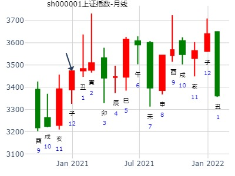